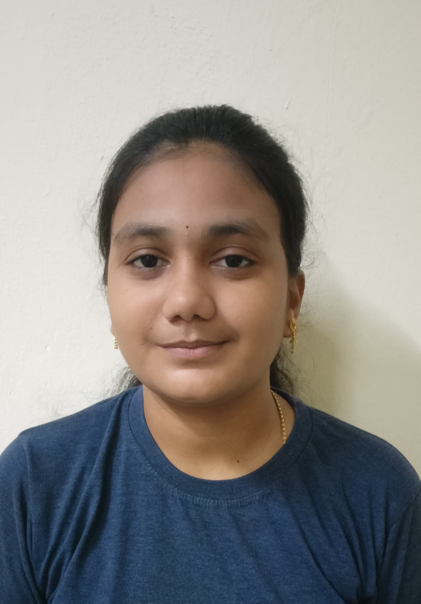

B.Tech Student | Computer Science & IT
📧 santoshipasumartig97@gmail.com | LinkedIn
Motivated and adaptable B.Tech 3rd-year student at Lendi Institute of Engineering and Technology with a strong foundation in programming, web development, and software engineering. Passionate about learning new technologies and contributing to innovative projects.
Java CV Generator Application: Java, Swing, iText PDF • Designed and developed a desktop application that generates professional CVs in PDF format based on user input. • Built an intuitive GUI using Java Swing for data entry, with structured layout and validation. • Utilized iText to dynamically create and format PDF documents with embedded user data and images. • Added real-time image preview and error handling for enhanced user experience
Portfolio Website Technologies: HTML, CSS, GitHub Pages Developed a clean and modern personal portfolio website to showcase projects, resume, academic details, certifications, and personal information. The website is designed with a responsive and user-friendly layout using HTML for structure and CSS for styling. It provides a clear presentation of project details and highlights skills and achievements. The website was deployed using GitHub Pages, enabling easy accessibility, version control, and seamless updates.